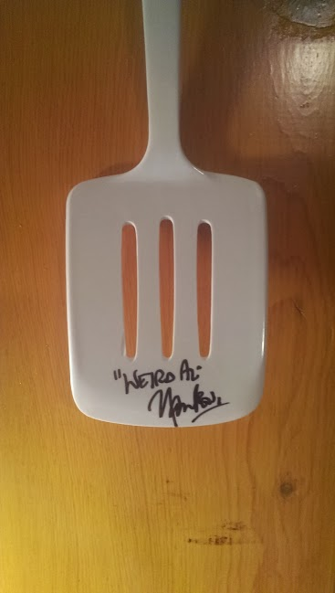

Brittany D. Miller
Dev Bootcamp Pocket Gopher 2014
I'm a theater/English major from Minneapolis. I've worked in sales, customer service, admin, purchasing, design, events, and marketing... all of which clarified my love of building things, solving problems, and improving systems. Very excited to be a Pocket Gopher at DBC and begin the journey down my new career path!
Quirk
A quirk of mine is that I have a long and sordid history with "Weird Al" Yankovic. I own every one of his albums, and in fact got to meet him once and got his autograph on a Spatula. Some of you older or nerdier folks may know why that is cool.
Something I Love
I love traveling and collecting theatre and ritual masks from the countries I visit. I was a theater major, but the mask collection started by accident/coincidence after several friends brought me back masks from their separate travels. I got so many of them that it only made sense to start collecting them from my own trips!
Korean Aristocrat Mask
Japanese Noh Princess Mask


© 2014 Brittany Miller. All Rights Reserved.